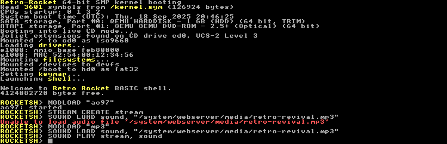

Audio System Structure
Retro Rocket’s audio system has four main parts:
Drivers
The driver is the low-level hardware backend (e.g. MODLOAD "ac97").
It is specific to your sound card in your PC. Without a driver, no audio commands will work.
Codecs
A codec is a small specialised program that knows how to decode audio files into the raw data format used by Retro Rocket. Codecs are provided as kernel modules, just like drivers, and must be loaded before you can use them.
- WAV support is built in and always available.
- MP3 support is available via the mp3.ko module (MODLOAD "mp3").
- FLAC support is available via the flac.ko module (MODLOAD "flac").
If you try to load any file type except WAV without first loading the corresponding codec module, you will receive an error as the file type will be unrecognised.
Streams
A stream is a playback channel created with STREAM CREATE.
- Each stream has its own queue of sounds, volume, and state.
- Multiple streams can run at once (for mixing music, effects, voices, etc.).
- A stream handle is always a positive integer ID.
Sounds
A sound is decoded audio data loaded into memory with SOUND LOAD.
- Sounds can be loaded from any supported codec (e.g. WAV, MP3, FLAC).
- Sounds are stored in RAM as 44.1 kHz stereo, 16-bit PCM.
- Sound handles are always non-zero integer IDs.
- Sounds must be freed with SOUND UNLOAD when no longer needed.
Flow of audio
File on disk (WAV/MP3/other) → Codec module decodes → SOUND LOAD → Sound handle
Sound handle + Stream → SOUND PLAY → Playback
Examples
Play a WAV file
MODLOAD "ac97" ' load audio driver
STREAM CREATE music
SOUND LOAD song, "track.wav"
SOUND PLAY music, song
Play an MP3 file
MODLOAD "ac97" ' load audio driver
MODLOAD "mp3" ' load MP3 codec module
STREAM CREATE music
SOUND LOAD song, "track.mp3"
SOUND PLAY music, song

Play a FLAC file
MODLOAD "ac97" ' load audio driver
MODLOAD "flac" ' load FLAC codec module
STREAM CREATE music
SOUND LOAD song, "track.flac"
SOUND PLAY music, song
Audio Keywords/Functions